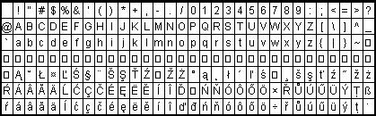

[Note: This article covers XFree86 version 4.x, which may not be in your distribution yet. -Ed.]
Write the following to your .bash_profile in home directory:
export LANG=language export LC_ALL=languagewhere "language" is the language you want to use. The languages can be found in the file locale.alias in /usr/X11R6/lib/X11/locale. Run the "exit" command on the console and log in again for bash to read the statement from ~/.bash_profile.
Install fonts (best are ISO8859-2 Type1 fonts for Czech or Slovak), put them in path to your XF86Config. Start X Server.
Please note that under certain circumstances the KDE 2.0 text editor doesn't display ISO8859-2 fonts even if you have them in path. The "Latin2" statement in this editor's menu seems not to work. Install another simple text editor where you can CHOOSE fonts (the old kedit from older KDE will do). Open a dialog window from menu, select font and choose ISO8859-2 encoding.
Run the command "xmodmap ~/.Xmodmap" from an X terminal window to force the system to read the Xmodmap file.
Switch the keyboard and enjoy.
The other, XKB solution, which is not covered in this file but mentioned since it pertains to internationalization too, is another way of configuring international keyboard, and both the XKB and XMODMAP solutions are independent of one another. You may alternatively edit the /etc/X11/XF86Config file as explained in the Danish-HOWTO, or issue this command in an X terminal window for the Slovak keyboard:
setxkbmap -model pc102 -symbols 'czsk(us_sk_qwertz)' setxkbmap cs -option grp:shift_toggleThe "grp:shift_toggle" gives you an option to switch between keyboards You may also try to write
Option "XkbOptions" "grp:ctrl_shift_toggle"to your XF86Config file, which will change keyboards by pressing Ctrl and Shift at the same time.
To see a variety of languages, look in the file symbols.dir in /usr/X11R6/lib/X11/xkb directory. Note that some symbols are only in sources and not in binaries.
As you see, this looks quite complicated too and it gets even more difficult when you realize that many national keymaps are not included in the standard XFree86 binary distribution, although they are included in its sources. The kikbd utility for handling international keyboard layouts was removed from KDE 2.0 and documentation is quite insufficient. A simple way would be to start KDE, change the international keyboard settings and immediately write in the language you chose (this will work for German and other languages, but in Eastern European keyboards some letters will not function).
Moreover, the KDE 2.0 command "kcmshell Personalization/kcmlayout" will not show you a Croatian or Macedonian keyboard. And although it shows a Czechoslovakian keyboard, Czechoslovakia does not exist as a country anymore and users may be confused with how to define the Czech or Slovak language separately.
Some X Windows managers override .Xmodmap setting. If .Xmodmap doesn't work, a good way is to force the system to read it from your root (home) directory. You will do this by issuing the following command from an X terminal window:
xmodmap ~/.Xmodmap
After I installed the Slovak keyboard in KDE with Xmodmap file that
used the standard definitions for ISO8859-2 letters (lcaron, scaron, etc.),
I couldn't write in Slovak or Czech, but this is already explained in my
howto published in Linux Gazette. That experimental solution is not necessary
for the newer versions of XFree86.
1. Standard solution uses the standard names for letters (scaron for s with a caron above it, uacute for ú - a slash above it).
2. Experimental solution, where some keycode names from ISO8859-1 character set table will give you scaron, for example.
Put the following in you Bash_profile:
export LC_ALL=language export LANG=languageOR
export LC_CTYPE=SK_SK export LC_ALL=SK_SK OR for csh shell setenv LC_ALL=language setenv LANG=languageand have the standard Xmodmap file in your home directory. If you ask me where you may obtain such "standard" Xmodmap files, go to GNOME ../share directory. The file /usr/X11R6/lib/X11/locale/locale.alias contains the aliases for languages, so look there in order to find out what is ca_ES or br_FR, or to find out the exact syntax for your language (you cannot write "croatia" but you must write "croatian", not "Croatian"; this is very important, as Unix is case sensitive).
Now you must install the pertinent language fonts and put its path statement in XF86Config file. If you want to internationalize your keyboard, use the standard Xmodmap definitions first and use right alt to switch between keyboards (if you use GNOME Xmodmap files). If it does not work, do the following:
If you use KDE or GNOME and .Xmodmap does not work, force the system to read it as mentioned above by issuing the command "xmodmap ~/.Xmodmap". Alternatively, you can have 60 .Xmodmap files like .Xmo1, .Xmo2, .Xmo3, .Xmo4, etc., and you may force the system to read them (xmodmap /.Xmo1). The dot means it is a hidden file and it is not necessary. You may also have xmo1, xmo2, or xmo3 Xmodmap files.
You may write in a national keyboard only with applications that have access to your ISO8859-2 fonts (or other fonts), but this may not work with StarOffice or with other applications that have their own built-in fonts. StarOffice has its own fonts directory - for afm fonts in StarOffice/share/xp3/fontmetrics/afm, and for ps fonts in StarOffice/share/xp3/pssoftfonts, so you must add the ISO8859-2 fonts to these directories (to tell StarOffice to use these fonts too) and edit fonts.dir file and add the symlinked fonts there. Here is a script that will do it for you. Name it "so52", make it executable (chmod +x so52), copy it to the StarOffice/share/xp3 directory and execute it there.
StarOffice 5.2 fully recognizes Word97 documents even written in other languages, but for the older versions or other editors, you may use a converter from iso8859-2 to win1250 encoding.
StarOffice 5.2 can be thus used by professional translators who may translate in any languages and give outputs in MS Word97 or rtf format.
keycode 0x31 = grave asciitilde semicolon dead_diaeresis keycode 0x0A = 1 exclam plus 1 keycode 0x0B = 2 at lcaron 2 keycode 0x0C = 3 numbersign scaron 3 keycode 0x0D = 4 dollar ccaron 4 keycode 0x0E = 5 percent tcaron 5 keycode 0x0F = 6 asciicircum scaron 6 keycode 0x10 = 7 ampersand yacute 7 keycode 0x11 = 8 asterisk aacute 8 keycode 0x12 = 9 parenleft iacute 9 keycode 0x13 = 0 parenright eacute 0 keycode 0x14 = minus underscore equal percent keycode 0x15 = equal plus dead_acute dead_caron keycode 0x33 = backslash bar ograve parenright
A caron is a reverse ^ above letter.
Acute is a small dash like / above the letter (ú, which is uacute).
Diaeresis is two dots .. above the letter.
Dot is a dot above the letter (zdot).
The following table will explain it even better:

If you want to build an ISO8859-1 Xmodmap file for a German or Danish keyboard, you must have another map to know how these symbols are named unless you are familirar with them.
The following Xmodmap entities on the right must be included in your
Xmodmap file to have the East European keyboard layout.
| Central European characters | |
| Character Name | Xmodmap and SGML entities |
| NON-BREAKING SPACE | nbsp |
| CURRENCY SIGN | curren |
| BROKEN BAR | brvbar |
| SECTION SIGN | sect |
| DIAERESIS | uml |
| COPYRIGHT SIGN | copy |
| LEFT-POINTING DOUBLE ANGLE QUOTATION MARK | laquo |
| NOT SIGN | not |
| SOFT HYPHEN | shy |
| REGISTERED SIGN | reg |
| DEGREE SIGN | deg |
| PLUS-MINUS SIGN | plusmn |
| ACUTE ACCENT | acute |
| MICRO SIGN | micro |
| PILCROW SIGN | para |
| MIDDLE DOT | middot |
| CEDILLA | cedil |
| RIGHT-POINTING DOUBLE ANGLE QUOTATION MARK | raquo |
| LATIN CAPITAL LETTER A WITH ACUTE | Aacute |
| LATIN CAPITAL LETTER A WITH CIRCUMFLEX | Acirc |
| LATIN CAPITAL LETTER A WITH DIAERESIS | Auml |
| LATIN CAPITAL LETTER C WITH CEDILLA | Ccedil |
| LATIN CAPITAL LETTER E WITH ACUTE | Eacute |
| LATIN CAPITAL LETTER E WITH DIAERESIS | Euml |
| LATIN CAPITAL LETTER I WITH ACUTE | Iacute |
| LATIN CAPITAL LETTER I WITH CIRCUMFLEX | Icirc |
| LATIN CAPITAL LETTER O WITH ACUTE | Oacute |
| LATIN CAPITAL LETTER O WITH CIRCUMFLEX | Ocirc |
| LATIN CAPITAL LETTER O WITH DIAERESIS | Ouml |
| MULTIPLICATION SIGN | times |
| LATIN CAPITAL LETTER U WITH ACUTE | Uacute |
| LATIN CAPITAL LETTER U WITH DIAERESIS | Uuml |
| LATIN CAPITAL LETTER Y WITH ACUTE | Yacute |
| LATIN SMALL LETTER SHARP S | szlig |
| LATIN SMALL LETTER A WITH ACUTE | aacute |
| LATIN SMALL LETTER A WITH CIRCUMFLEX | acirc |
| LATIN SMALL LETTER A WITH DIAERESIS | auml |
| LATIN SMALL LETTER C WITH CEDILLA | ccedil |
| LATIN SMALL LETTER E WITH ACUTE | eacute |
| LATIN SMALL LETTER E WITH DIAERESIS | euml |
| LATIN SMALL LETTER I WITH ACUTE | iacute |
| LATIN SMALL LETTER I WITH CIRCUMFLEX | icirc |
| LATIN SMALL LETTER O WITH ACUTE | oacute |
| LATIN SMALL LETTER O WITH CIRCUMFLEX | ocirc |
| LATIN SMALL LETTER O WITH DIAERESIS | ouml |
| DIVISION SIGN | divide |
| LATIN SMALL LETTER U WITH ACUTE | uacute |
| LATIN SMALL LETTER U WITH DIAERESIS | uuml |
| LATIN SMALL LETTER Y WITH ACUTE | yacute |
| LATIN CAPITAL LETTER A WITH BREVE | Abreve |
| LATIN SMALL LETTER A WITH BREVE | abreve |
| LATIN CAPITAL LETTER A WITH OGONEK | Aogon |
| LATIN SMALL LETTER A WITH OGONEK | aogon |
| LATIN CAPITAL LETTER C WITH ACUTE | Cacute |
| LATIN SMALL LETTER C WITH ACUTE | cacute |
| LATIN CAPITAL LETTER C WITH CARON | Ccaron |
| LATIN SMALL LETTER C WITH CARON | ccaron |
| LATIN CAPITAL LETTER D WITH CARON | Dcaron |
| LATIN SMALL LETTER D WITH CARON | dcaron |
| LATIN CAPITAL LETTER D WITH STROKE | Dstrok |
| LATIN SMALL LETTER D WITH STROKE | dstrok |
| LATIN CAPITAL LETTER E WITH OGONEK | Eogon |
| LATIN SMALL LETTER E WITH OGONEK | eogon |
| LATIN CAPITAL LETTER E WITH CARON | Ecaron |
| LATIN SMALL LETTER E WITH CARON | ecaron |
| LATIN CAPITAL LETTER L WITH ACUTE | Lacute |
| LATIN SMALL LETTER L WITH ACUTE | lacute |
| LATIN CAPITAL LETTER L WITH CARON | Lcaron |
| LATIN SMALL LETTER L WITH CARON | lcaron |
| LATIN CAPITAL LETTER L WITH STROKE | Lstrok |
| LATIN SMALL LETTER L WITH STROKE | lstrok |
| LATIN CAPITAL LETTER N WITH ACUTE | Nacute |
| LATIN SMALL LETTER N WITH ACUTE | nacute |
| LATIN CAPITAL LETTER N WITH CARON | Ncaron |
| LATIN SMALL LETTER N WITH CARON | ncaron |
| LATIN CAPITAL LETTER O WITH DOUBLE ACUTE | Odblac |
| LATIN SMALL LETTER O WITH DOUBLE ACUTE | odblac |
| LATIN CAPITAL LETTER R WITH ACUTE | Racute |
| LATIN SMALL LETTER R WITH ACUTE | racute |
| LATIN CAPITAL LETTER R WITH CARON | Rcaron |
| LATIN SMALL LETTER R WITH CARON | rcaron |
| LATIN CAPITAL LETTER S WITH ACUTE | Sacute |
| LATIN SMALL LETTER S WITH ACUTE | sacute |
| LATIN CAPITAL LETTER S WITH CEDILLA | Scedil |
| LATIN SMALL LETTER S WITH CEDILLA | scedil |
| LATIN CAPITAL LETTER S WITH CARON | Scaron |
| LATIN SMALL LETTER S WITH CARON | scaron |
| LATIN CAPITAL LETTER T WITH CEDILLA | Tcedil |
| LATIN SMALL LETTER T WITH CEDILLA | tcedil |
| LATIN CAPITAL LETTER T WITH CARON | Tcaron |
| LATIN SMALL LETTER T WITH CARON | tcaron |
| LATIN CAPITAL LETTER U WITH RING ABOVE | Uring |
| LATIN SMALL LETTER U WITH RING ABOVE | uring |
| LATIN CAPITAL LETTER U WITH DOUBLE ACUTE | Udblac |
| LATIN SMALL LETTER U WITH DOUBLE ACUTE | udblac |
| LATIN CAPITAL LETTER Z WITH ACUTE | Zacute |
| LATIN SMALL LETTER Z WITH ACUTE | zacute |
| LATIN CAPITAL LETTER Z WITH DOT ABOVE | Zdot |
| LATIN SMALL LETTER Z WITH DOT ABOVE | zdot |
| LATIN CAPITAL LETTER Z WITH CARON | Zcaron |
| LATIN SMALL LETTER Z WITH CARON | zcaron |
| CARON | caron |
| BREVE | breve |
| DOT ABOVE | dot |
| OGONEK | ogon |
| DOUBLE ACUTE ACCENT | dblac |
RedHat:
LANG="sk_SK"
where "sk_SK" is your langauge.
Mandrake:
SYSFONT=lat0-sun16
LC_MONETARY=en_US
LC_CTYPE=cs_CZ
LC_NUMERIC=en_US
LC_MESSAGES=en_US
LANGUAGE=cs_CZ:cs
LC_TIME=en_US
RPM_INSTALL_LANG=en
LC_COLLATE=en_US
SYSFONTACM=iso15
LANG=sk
Or in FreeBSD 4.2 you edit /etc/profile in the following way:
LANG=cs_CZ.ISO_8859-2; export LANG
# to write in Czech
LC_MESSAGES=en_US.ISO_8859-1; export LC_MESSAGES
# to have English messages
In the case of Mandrake or FreeBSD we will be using the map "cs" from
the
/usr/X11R6/lib/X11/xkb/symbols/ directory. You can always use the xmodmap
solution with this, but an alternative way is to edit your map file
accordingly where you replace definitions with your own. KDE 2.x also
requires to choose from menu Personalization > Country and Language
>
iso8859-2 charset (or other charset). Only then it correctly displays
ISO8859-2 fonts in its native applications. Here GNOME appears more
user-friendly.
The following pertains to situation where the i18n file was not changed.
After copying the Compose file from /usr/X11R6/lib/X11/locale/iso8859-2/ to the /usr/X11R6/lib/X11/locale/iso8859-1/, you may start elegantly working with dead keys. This was also tested on StarOffice 5.2. The FontPath must be in /etc/XF86Config, not in /etc/X11/Xf86Config. If you put the FontPath for ISO8859-2 fonts to the /etc/X11/Xf86Config file, StarOffice may not see these fonts properly. While working with StarOffice, you must NOT use the fonts from the StarOffice itself, but the ones from ../ISO8859-2 directory (they will automatically appear in the font menu after executing the above script).
The following is the FontPath section for ISO8859-2 fonts from my SuSE 7.0 /etc/XF86Config file:
FontPath "/usr/X11R6/lib/X11/fonts/ISO8859-2/Type1"
FontPath "/usr/X11R6/lib/X11/fonts/ISO8859-2/Type1/afm"
FontPath "/usr/X11R6/lib/X11/fonts/ISO8859-2/Type1/pfm"
The FontPath statement in /etc/X11/XF86Config and /etc/X11/XF86Config does not have to be changed:
FontPath "unix/:1"
The XFree86 reads your new ISO8859-2 fonts automatically in /usr/share/fonts directory (same as in RedHat). Surprisingly, you do not have to copy the ../ISO8859-2/Compose file to ../ISO8859-1 directory and dead keys work nice. To use ISO8859-2 fonts with KDE 2.0 native applications, see the above i18n file for Mandrake 7.2.